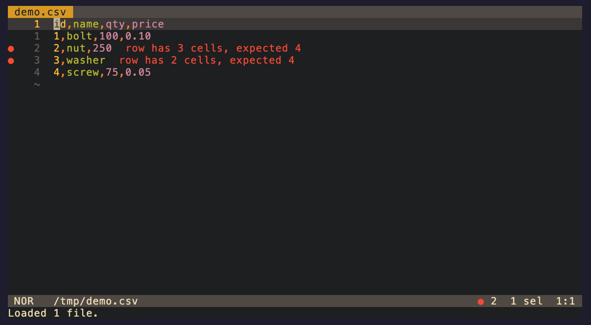
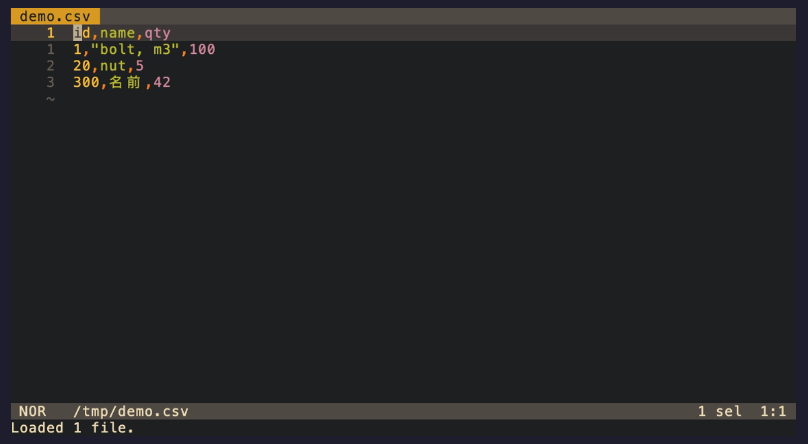
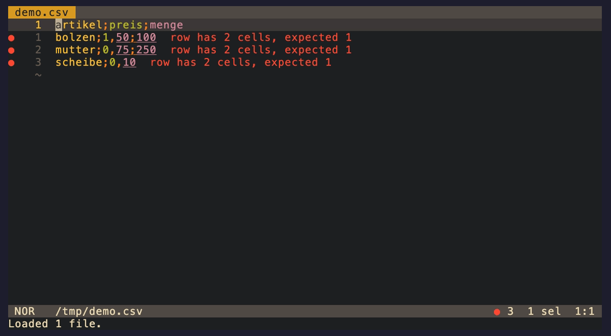
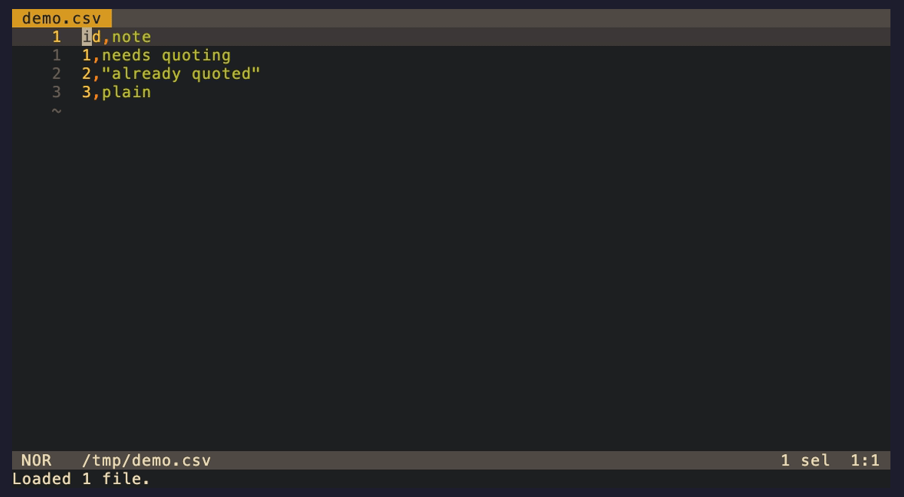
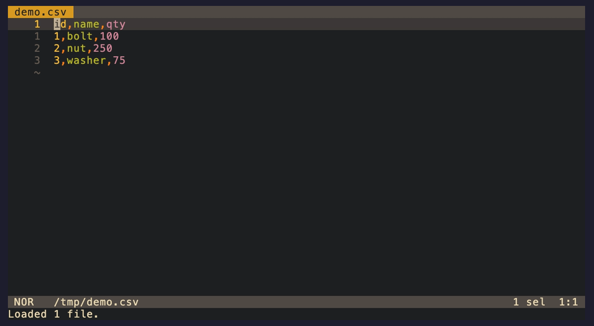

Features
Every feature, one by one: what it does in the editor, how it works inside, and the edge rules. Each section has a GIF slot plus the script to record it — see Recording the GIFs.
How a feature is built
All features share one shape. The server parses the document into a span-rich
Table (the parser page), and features are small plugins over that
table, collected in features::Registry::standard() — diagnostic rules produce
squiggles, action providers produce entries for the code-action menu:
pub trait DiagnosticRule {
fn name(&self) -> &'static str;
fn check(&self, text: &str, table: &Table) -> Vec<Diag>;
}
pub trait ActionProvider {
fn name(&self) -> &'static str;
fn actions(&self, ctx: &ActionContext) -> Vec<Action>;
}Three ground rules apply to every feature and explain most edge behavior:
- The header is the column contract. The first non-blank row defines the expected cell count; blank lines are separators — legal, never padded, never counted.
- The verbatim principle. Rows overlapping a parse error are excluded from column checks and passed through byte-for-byte by every rewrite — the server never reformats what the parser could not fully understand.
- Padding is layout, not data. Cell values are the space-trimmed content; quoted
cell interiors are never touched; space between a closing quote and the delimiter
(
"abc" ,) is tolerated because alignment produces exactly that.
In Helix, Spacea opens the code-action menu. For a given cursor the server answers in a fixed order (providers run in registration order): Pad row (quickfix, preferred) → Pad all short rows → Align columns → Compact columns → Reinterpret as … ×3 → Convert to … ×3 → Quote cell → Quote column → Add column left/right → Delete column — each entry present only when applicable (clients may additionally sort preferred entries first).
Diagnostics
Two diagnostic rules run over every parse, on every keystroke.
Ragged rows (src/features/ragged_rows.rs) checks each row’s cell count against
the header:
id,name,qty,price
1,bolt,100,0.10
2,nut,250 ← row-missing-cells: “row has 3 cells, expected 4”
3,washer,75,0.05,x ← row-extra-cells: “row has 5 cells, expected 4”- A short row gets a zero-width span at its end — “cells are missing here” — which editors render as an end-of-line marker instead of underlining innocent text.
- A long row is underlined from its first extra cell to the row end, so the span covers exactly the data that would have to go.
Quoting errors (src/features/parse_errors.rs) surface the parser’s three
recovered error kinds one-to-one: unclosed-quote (error),
stray-quote (warning — 5" bolt is extremely common in real data),
and text-after-quote (error). The spans come straight from the parser
and are byte-exact: an unclosed quote underlines the opening quote, not the whole
rest of the file. Recovery details are on the
parser page.
Two anti-noise rules keep broken files workable: rows that already carry a quoting error are skipped by the ragged-row check (one broken quote must not cascade into dozens of errors), and blank rows are never diagnosed.
The short-row analysis lives in one function used by both the diagnostic and the
quickfix below — short_rows(&Table) -> Vec<ShortRow> — so the squiggle and its fix
can never drift apart. The diagnostic also carries a structured payload built with the
serde_json::json! macro ({"row": 1, "missing": 2}), but that payload is
write-only: providers recompute everything from the freshly parsed table rather than
trusting what a client echoes back.
docs/gifs/tapes/diagnostics.tape · how to recordRecording script — diagnostics.gif (~20 s)
Automated: vhs docs/gifs/tapes/diagnostics.tape (run from the repository root).
Manual, if you prefer to drive it yourself:
- Open the ragged sample:
hx /tmp/demo.csv(copy ofdocs/gifs/samples/inventory.csv) — two rows are short; squiggles are already visible at their line ends. - Press Spaced to show the diagnostic picker with both messages; Esc to close.
- Navigate to the
3,washerrow end (gg,3j,$), append,75,0.05(a … Esc) — watch the diagnostic vanish the moment the row is complete. - Pause a beat on the clean state, then quit without saving (
:q!).
Show: live update on every keystroke; the zero-width marker sits at the row end, not under data.
Quickfix: pad short rows
The fix attached to row-missing-cells
(src/features/pad_rows.rs): insert the missing empty cells at the row end. Under a
4-column header, x,y becomes x,y,, — two inserted delimiters are two empty
cells. Two flavors:
- Pad row with N empty cells — a
quickfixfor the row under the cursor, marked preferred so editors can apply it with one keystroke. - Pad all short rows (N) — a
source.fixAllaction offered wherever the cursor is; its edits are one insert per short row, in document order.
The insert lands at row.span.end — after any alignment padding, which the parser
treats as part of the last cell — and uses the document’s own delimiter, so the same
code pads TSV rows with tabs. The header itself is never padded (it defines the
contract), and rows with quoting errors are skipped (fix the quoting first).
An action’s edits are plain values: Vec<(Span, String)> — replace these bytes with
this text. An insertion is a zero-width span (Span::new(end, end)). Keeping edits as
data (instead of mutating the document) means the same values can be unit-tested with
edits::apply, property-tested for the LSP contract (non-overlapping, in document
order), and converted to protocol TextEdits at the server boundary.

docs/gifs/tapes/pad-rows.tape · how to recordRecording script — pad-rows.gif (~20 s)
Automated: vhs docs/gifs/tapes/pad-rows.tape
Manual:
- Open the copy of
docs/gifs/samples/inventory.csv; put the cursor on the2,nut,250row. - Spacea — the menu opens with Pad row with 1 empty cell as the preferred first entry. Enter. The row gains a trailing comma; its diagnostic disappears.
- Move to the header (
gg), Spacea again, pick Pad all short rows (1) — the remaining short row is repaired from a distance. - Show the clean gutter, quit with
:q!.
Show: quickfix is cursor-local, fix-all works from anywhere; empty cells appear as trailing delimiters.
Align columns
Pad cells with spaces so the delimiters line up under the header
(src/features/align.rs). Exposed twice over the same code path: as LSP
formatting (:format, or on save with auto-format = true) and as the
Align columns source action:
id,name,qty id,name ,qty
1,"a,b",3 ⇄ 1 ,"a,b",3
20,x,400 20,x ,400How it works: column_widths() measures every column’s maximum display width over
the content of clean rows; render() re-emits the table padded to those widths; and
edits::minimize() diffs the result against the current text into at most one small
edit — trimming the common prefix and suffix — so the viewport doesn’t jump and the
cursor stays put. Already aligned? minimize returns nothing, the action isn’t even
offered, and formatting answers “no edits” — that idempotence is what makes
format-on-save safe.
- Widths are display columns, not bytes and not chars:
éis 1 cell (2 bytes),名is 2 cells (3 bytes),😀is 2 cells (4 bytes). Theunicode-widthcrate implements the Unicode rules (UAX #11); ambiguous-width or ZWJ-emoji cells may still render off-by-one in some terminals — a documented limit. - Quoted cells participate with their quotes (
"a,b"is width 5); their interior is untouched. - A cell is padded only when another cell follows it in its own row: last cells stay unpadded, so no row ever gains trailing whitespace.
- Blank rows stay empty lines; parse-error rows pass through verbatim; mixed line terminators are normalized to the file’s first one.
Align, compact and dialect conversion are all render(text, &table, &RenderOptions)
with different options — align is align: Some(widths), compact is align: None.
RenderOptions::aligned_for is built from compact_for using
struct update syntax: RenderOptions { align: Some(widths), ..Self::compact_for(table) }
— copy every other field from another instance. One code path means the round-trip
guarantees below are properties of a single function, not a family of lookalikes.
Compact columns
The inverse (src/features/compact.rs): strip alignment padding, restoring the
canonical machine-friendly form. Same renderer with align: None, same minimal-edit
delivery, offered only when there is padding to strip.
The pair comes with tested round-trip guarantees (see the property suite): align is idempotent, compact is idempotent, and compact ∘ align = compact — aligning and compacting returns you byte-for-byte to the compact form. Padding truly is layout: you can toggle it freely without ever touching data.

docs/gifs/tapes/align-compact.tape · how to record:format aligns; Compact columns restores the compact form byte-for-byte.Recording script — align-compact.gif (~20 s)
Automated: vhs docs/gifs/tapes/align-compact.tape
Manual:
- Open the copy of
docs/gifs/samples/messy.csv— unaligned, with a quoted comma cell and a CJK cell. - Type
:formatEnter — delimiters snap into columns; note the quoted"bolt, m3"cell and the double-width名前cell line up correctly. - Pause. Spacea, pick Compact columns — the padding disappears again.
- Quit with
:q!.
Show: quoted delimiters don’t split cells; CJK width handled; align ⇄ compact is a clean round trip.
Reinterpret as CSV/TSV/SSV/PSV
For files whose extension lies — the classic case is a .csv export that is actually
semicolon-separated. Under the wrong dialect every feature misbehaves (a 1;2;3 row is
one CSV cell), and no text edit can fix that: what must change is the server’s
parsing state, not the document.
Reinterpret as … (src/features/reinterpret.rs) is therefore the one action that
carries no edit. It carries an LSP Command instead: picking it makes the client
call workspace/executeCommand with csv-lsp.setDialect [uri, "ssv"]; the server
re-parses the document under the new dialect and republishes diagnostics — zero text
changes. The full request/response walk is on the
LSP page.
- Offered for every dialect except the current one, and built from the document’s current dialect — after one reinterpretation, the next menu reflects it.
- Session-scoped by design: on reopen, extension detection wins again. The durable fixes are renaming the file — or converting it:
Convert to CSV/TSV/SSV/PSV
Convert to … (src/features/transform.rs) rewrites the text to a different
delimiter. Changing the delimiter changes which cells need quotes, and the renderer’s
QuotePolicy::PreserveOrRequired handles exactly that:
artikel;preis artikel,preis
bolzen;1,50 → bolzen,"1,50" ← the decimal comma must be protected in CSV- Already-quoted cells are emitted verbatim — they are protected under any delimiter.
- A clean unquoted cell gains quotes exactly when its content contains the target delimiter. (It can never contain quotes or newlines — those rows carry parse errors, and files with parse errors offer no conversions at all: their error rows would pass through verbatim with old delimiters, producing a mixed-dialect file. Fix quoting first.)
- Conversion emits the compact form — padding was layout for the old column widths — so re-align afterwards if you like. Renaming the file to match is your follow-up.
The dialect flips when — and only when — you apply it. The action is a text edit;
the server cannot know whether you picked it or dismissed the menu. So when answering
the code-action request it remembers (converted text, target dialect) per document;
if the next didChange delivers exactly that text, the document adopts the new
dialect for reparsing. Dismissed offers cost nothing; manual edits never flip the
dialect by accident.

docs/gifs/tapes/reinterpret-convert.tape · how to recordRecording script — reinterpret-convert.gif (~30 s)
Automated: vhs docs/gifs/tapes/reinterpret-convert.tape
Manual:
- Open the copy of
docs/gifs/samples/preise.csv— semicolon content under a.csvname. Note: no diagnostics, because as CSV this parses as one column per row; the missing cell in the last row is invisible. - Spacea, pick Reinterpret as SSV. Instantly the short last row gets its row-missing-cells squiggle — the server now sees three columns.
- Fix the row (append
;250), or leave it and point at the diagnostic. - Spacea, pick Convert to CSV — semicolons become commas and
1,50gains quotes:bolzen,"1,50". Diagnostics stay sane: the server flipped the dialect with the applied edit. - Quit with
:q!.
Show: the “extension lies” failure mode; reinterpret = parse change only; convert = text change with automatic quoting.
Quote cell / quote column
Wrap the cell under the cursor — or every unquoted cell of its column, header included
— in RFC 4180 quotes (src/features/quote.rs; kind refactor.rewrite). Useful before
pasting delimiter-ish content into cells and for defensively quoting free-text columns.
id,note id,"note"
1 ,needs quoting → 1 ,"needs quoting" (Quote column "note")
2 ,"already quoted" 2 ,"already quoted" (left alone)- The edit replaces the cell’s content span with
encode_cell(value, dialect, force_quote: true)— so alignment padding stays outside the new quotes and layout is preserved. - Only unquoted cells on clean rows qualify: already-quoted cells would be no-ops the picker must not show; blank rows have nothing to quote; parse-error rows are never rewritten. A fully-quoted column offers nothing.
- An all-padding cell has a zero-width content span, so quoting it yields
""with the spaces intact. - Column actions are titled with the header value —
Quote column "name"— truncated to 24 characters; a column past the header’s width falls back to#N(1-based, as users count).
The title helper truncates with value.chars().take(24).collect(), never
&value[..24] — byte-slicing a String at an arbitrary index panics if it lands
inside a multi-byte character (名 is 3 bytes). The same discipline appears
everywhere in this codebase: byte offsets are used only where they are provably on
char boundaries (see the parser’s span invariant).

docs/gifs/tapes/quote.tape · how to recordRecording script — quote.gif (~20 s)
Automated: vhs docs/gifs/tapes/quote.tape
Manual:
- Open the copy of
docs/gifs/samples/quotes.csv; cursor into theneeds quotingcell. - Spacea, pick Quote cell — just this cell gains quotes; padding stays outside.
- Spacea again, pick Quote column "note" — the header and every remaining unquoted cell gain quotes; the already-quoted row is untouched.
- Reopen the menu once more: the quote actions are gone (nothing left to quote).
Quit with
:q!.
Show: padding survives outside quotes; idempotence — fully-quoted columns offer nothing.
Add / delete columns
Structural column editing at the cursor (src/features/columns.rs; kind
refactor): insert an empty column left or right of the current one, or delete it
across the whole file. Because every cell’s span excludes the delimiters around it,
these are pure offset arithmetic:
row: · a ·, · b ·, c (· = alignment space)
add left of b: insert "," at cells[1].span.start → · a ·,, · b ·, c
add right of b: insert "," at cells[1].span.end → · a ·, · b ·,, c
delete b: remove cells[0].span.end .. cells[1].span.end
→ · a ·, c- One delimiter inserted at a cell boundary is one new empty cell — placed before any leading padding (add-left) or after any trailing padding (add-right), so aligned files stay tidy.
- Deleting an inner column removes the cell plus its preceding delimiter; deleting the first column takes the following one; the only cell of a single-column row just loses its content (the row becomes a blank line).
- Quoted cells are deleted wholesale —
"a,b"counts as one cell, commas and all. - Edits cover clean rows that have the column: blank rows, parse-error rows and shorter rows are skipped (short rows are already flagged and keep their pad quickfix — guessing where their missing column “would be” helps nobody).
- Because the header row is edited too, the column contract shifts coherently: a clean file is still clean after add or delete, and a single editor undo restores everything.
Row selection is one lazily-evaluated helper shared by all three actions and the column highlight below:
fn editable_rows<'t>(
table: &'t Table,
error_rows: &'t HashSet<usize>,
column: usize,
) -> impl Iterator<Item = &'t Row>impl Iterator returns “some iterator type” without naming it; the 't lifetime ties
the borrowed rows to the table they come from, so the compiler proves no action can
hold row references after the document changes. Zero allocation, zero copies — each
caller just walks the rows it needs.
docs/gifs/tapes/columns.tape · how to recordid, then delete it again — a byte-identical round trip.Recording script — columns.gif (~20 s)
Automated: vhs docs/gifs/tapes/columns.tape
Manual:
- Open the copy of
docs/gifs/samples/columns.csv; cursor on theidheader cell. - Spacea, pick Add column right of "id" — every row gains an empty second cell, header included; the file stays diagnostic-free.
- Move the cursor into the new empty column (one character right of the first comma).
- Spacea, pick Delete column #2 (headerless columns get numbered titles) — the file is byte-identical to where it started.
- Quit with
:q!.
Show: header moves with the rows (no new diagnostics); numbered title for the headerless column; clean round trip.
Select a column (Helix)
No LSP request lets a server set the user’s selection — that is deliberately
client-side. The bridge (src/features/columns.rs +
handle_document_highlight in src/server.rs): the server answers
textDocument/documentHighlight — “which ranges belong together at this cursor?” —
with every cell of the cursor’s column, and Helix’s
Spaceh (select all references to the symbol under the cursor) turns
that response into one selection per range. Column selection, no protocol extension.
- The ranges are content spans, not full cell spans: multi-cursor edits operate on values while alignment padding survives.
- An empty cell contributes a zero-width range — Helix places a bare cursor there, ready for typing. Exactly what you want when filling a column.
- Row participation mirrors the column-edit rule: clean rows that have the column, header included; ranges arrive in document order.
Daily use: Spaceh, then c to change every cell, A to append to each, or pipe the selections through a shell command — ordinary Helix multi-cursor editing, scoped to a column.

docs/gifs/tapes/select-column.tape · how to recordRecording script — select-column.gif (~20 s)
Automated: vhs docs/gifs/tapes/select-column.tape
Manual:
- Open the copy of
docs/gifs/samples/highlight.csv; cursor into thenamecolumn (any row). - Spaceh — every cell of the column is selected; the empty cell in row 3 shows as a bare cursor.
- Press c, type a replacement (e.g.
part), Esc — every cell of the column now reads the same, including the previously empty one. - Press u to undo, pause, quit with
:q!.
Show: per-cell selections (not a block selection); the empty-cell cursor; padding and neighboring columns untouched.
Rainbow columns (tree-sitter grammar)
One feature deliberately does not live in the language server. Helix highlights
exclusively through tree-sitter — it has no LSP semantic-token support — so csv-lsp (or
any language server) cannot color columns. Colors come from a grammar plus per-language
queries, and this repository ships both in tree-sitter-rainbow-csv/: a grammar whose
parse trees carry the column position (cells named first … seventh, cycling every
seven columns) and an 11-line highlight query mapping those names to theme colors.
It is a rewrite of the grammar Helix bundles for csv, keeping its node names — so existing themes keep working — while fixing what made it derail:
| bundled grammar | this grammar | |
|---|---|---|
empty cells (a,b,,,) | parse error; neighboring rows change color | clean parse, stable colors |
| more than 7 columns | parse error after the 7th | cycle wraps (8th = first) |
| tab as delimiter (TSV) | whole row is one cell | supported |
"" escapes in quoted cells | parse error | supported (RFC 4180) |
| missing final newline | parse error on the last row | tolerated |
Setup on top of the quickstart config — pin rev to a
commit for reproducible builds:
# ~/.config/helix/languages.toml
[[grammar]]
name = "csv"
source = { git = "https://github.com/tammoippen/csv-lsp", rev = "main", subpath = "tree-sitter-rainbow-csv" }hx --grammar fetch && hx --grammar build
# Helix resolves queries by language name: install for csv, inherit for the rest.
Q=~/.config/helix/runtime/queries
mkdir -p "$Q"/{csv,tsv,ssv,psv}
cp csv-lsp/tree-sitter-rainbow-csv/queries/highlights.scm "$Q"/csv/
for l in tsv ssv psv; do echo '; inherits: csv' > "$Q"/$l/highlights.scm; doneOne cosmetic caveat, shared with the bundled grammar: the grammar splits on all four
delimiters in every file (tree-sitter has no per-file dialect detection), so a bare
, inside an unquoted SSV cell starts a new color. Quote the cell if it bothers you —
csv-lsp’s diagnostics always follow the file’s real dialect and are unaffected.
Skipping the grammar override also works: recent Helix still rainbows csv/ssv/psv
through the bundled grammar, with its empty-cell color shifts; tsv rows render as a
single column.
For the docs, a static screenshot works better than a GIF here: open
docs/gifs/samples/messy.csv after the grammar setup, align it, and screenshot the
terminal to docs/gifs/rainbow.png (referenced nowhere yet — add it to the README if
you like).
Recording the GIFs
The GIFs above are not committed — they are reproducible artifacts, recorded with
VHS: a tool that scripts a real terminal
session from a .tape file and renders it straight to GIF. The tapes live in
docs/gifs/tapes/, one per GIF, and are the single source of truth for what each
recording shows; the sample files they open live in docs/gifs/samples/.
Prerequisites
- csv-lsp installed and Helix configured exactly as in the
quickstart (the tapes assume Spacea,
:formatand Spaceh reach csv-lsp). Verify withhx --health csvfirst — a misconfigured server records an empty menu. - VHS:
brew install vhsorgo install github.com/charmbracelet/vhs@latest(VHS bundles its own headless terminal via ttyd and needsffmpeg; the package managers pull both in). - A font with the sample glyphs (the messy sample contains
éand名前) — the default VHS font handles them.
Recording
From the repository root:
vhs docs/gifs/tapes/diagnostics.tape # one tape …
for t in docs/gifs/tapes/*.tape; do vhs "$t"; done # … or all of themEach tape copies its sample to /tmp/demo.* first and quits Helix with :q!, so the
committed samples are never modified and every run starts from the same state. Output
lands next to the pages as docs/gifs/<name>.gif — reload this page and the
placeholders light up.
| Tape | Output | Shows |
|---|---|---|
diagnostics.tape | diagnostics.gif | live squiggles appearing/disappearing while editing |
pad-rows.tape | pad-rows.gif | pad quickfix + pad-all source action |
align-compact.tape | align-compact.gif | :format alignment, compact round trip |
reinterpret-convert.tape | reinterpret-convert.gif | mislabeled file → reinterpret → convert |
quote.tape | quote.gif | quote cell, quote column |
columns.tape | columns.gif | add column, delete column |
select-column.tape | select-column.gif | Spaceh column multi-selection |
Anatomy of a tape
# docs/gifs/tapes/align-compact.tape — annotated
Output docs/gifs/align-compact.gif # written relative to where you run `vhs`
Require hx # abort early if a binary is missing
Require csv-lsp
Set Shell bash
Set FontSize 20 # 20pt at 1200×660 ≈ README-friendly size
Set Width 1200
Set Height 660
Set Padding 12
Set Theme "Catppuccin Mocha"
Set TypingSpeed 60ms # delay between keystrokes
Hide # setup happens off-camera …
Type "cp docs/gifs/samples/messy.csv /tmp/demo.csv && hx /tmp/demo.csv"
Enter
Sleep 3s # give Helix + csv-lsp time to hand-shake
Show # … recording starts here
Sleep 1.5s
Type ":format"
Sleep 500ms
Enter
Sleep 2.5s # linger on the aligned state
Type " a" # Space then a = code-action menu
Sleep 1.5s
Enter # first entry: Compact columns
Sleep 2.5s
Hide
Type ":q!"
EnterTapes select code-action entries by position (Down × n + Enter), relying on the
server’s deterministic order (listed above). Helix versions may sort the
menu differently (preferred entries first) or add entries if your sample state drifts —
if a recording picks the wrong action, adjust the Down count in the tape. Each tape
has a comment marking every selection with the entry it expects.
Polish
- Size: keep GIFs under ~2–3 MB if they should embed in the README. Shorter
Sleeps and fewer scenes beat post-compression; if needed:gifsicle -O3 --lossy=80 -o out.gif in.gif. - Consistency: keep
FontSize/Width/Height/Themeidentical across all tapes so the feature gallery looks like one recording session. - Pacing: end every scene with a 2 s hold on the result — the loop point of a GIF is where the eye rests.
Recording manually instead
If you would rather drive Helix yourself (or VHS is unavailable), follow the numbered manual script in each feature section above while any screen recorder captures the terminal, then convert to GIF:
# X11/Wayland/macOS: record with your tool of choice (OBS, wf-recorder, QuickTime), then:
ffmpeg -i recording.mp4 -vf "fps=12,scale=1200:-1:flags=lanczos,split[s0][s1];[s0]palettegen[p];[s1][p]paletteuse" docs/gifs/align-compact.gif
# terminal-native alternative: asciinema + agg
asciinema rec demo.cast # do the steps, Ctrl-D to stop
agg --font-size 20 demo.cast docs/gifs/align-compact.gif